3．线性泛函分析
泛函分析的主要工作在于对积分方程而不是对变分法提供一个抽象的理论。变分法领域里所需泛函的性质是相当特殊的，对一般的泛函并不成立。此外，这些泛函的非线性造成了困难，而这种困难对于包含在积分方程中的泛函和算子则是无关紧要的。在施密特、费希尔、里斯为积分方程解的理论作具体推广时，他们和其他一些人也同时开始了相应的抽象理论的研究。
第一个试图建立线性泛函和算子的抽象理论的，是美国数学家穆尔，他从1906年开始这一工作(15)。穆尔认识到，在有限多个未知数的线性方程的理论、无限多个未知数的无限多个线性方程的理论以及线性积分方程的理论之间，有许多共同的地方。他因此着手建立一种称为“一般分析”（General Analysis）的抽象理论，它包含上述具体理论作为特殊情形。他用的是公理方法。我们将不叙述其细节，因为他的影响并不广，而且也没有获得很有效的方法。另外，他的符号语言很奇怪，使以后的人理解起来很困难。
在建立线性泛函和算子的抽象理论的过程中，第一个有影响的步骤是由施密特(16)和弗雷歇(17)在1907年采取的。希尔伯特在他的积分方程的工作中，曾经把一个函数看成是由它相应于某标准正交函数系的傅里叶系数给定的。这些系数以及∞在他的无穷多个变量的二次型理论中他所赋予这些
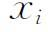
的值，都是使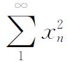
成为有限的序列｛xn｝。然而，希尔伯特并没有把这些序列看成空间中点的坐标，也没有用几何的语言。这一步是由施密特和弗雷歇采取的。把每一个序列｛xn｝看成一个点，函数就被表现为无穷维空间的点。施密特不仅把实数而且把复数引入序列｛xn｝中。这样的空间从此以后被称为希尔伯特空间。我们的叙述按照施密特的工作。施密特的函数空间的元素是复数的无穷序列
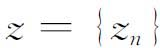
，使得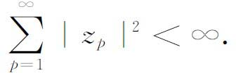
施密特引入记号
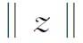
来表示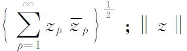
后来就称为z的范数（norm）。按照希尔伯特，施密特用记号（z，w）表示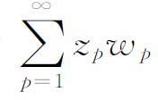
，所以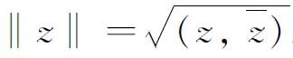
。［现在通用的记号是把（z，w）定义为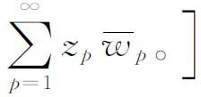
。空间中两个元素z和w称为正交的，当且仅当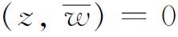
。施密特接着证明了广义的毕达哥拉斯定理：如果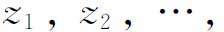
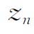
是空间的n个两两正交的元素，则由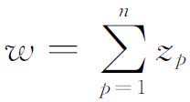
知
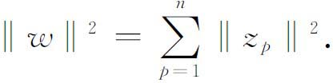
由此可推出n个两两正交的元素是线性无关的。施密特在他的一般空间中还得到了贝塞尔不等式：如果
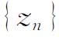
是标准正交元素的无穷序列，即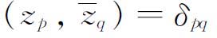
，而w是任何一个元素，那么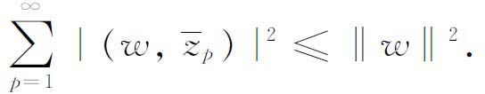
此外，还证明了范数的施瓦茨不等式和三角不等式。
元素序列
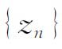
称为强收敛于z，如果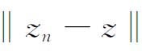
趋向于0，而每个强柯西序列，即每个使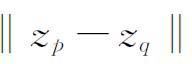
趋于0（当p，q趋于∞时）的序列，可以证明都收敛于某一元素z，从而序列空间是完备的。这是一条非常重要的性质。施密特接着引进了（强）闭子空间的概念。他的空间H的一个子集A称为闭子空间，如果在刚才定义的收敛的意义下它是闭子集，并且是代数封闭的，后者意指，如果
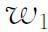
与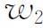
是A的元素，那么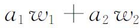
也是A的元素，其中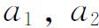
是任何复数。可以证明这样的闭子空间是存在的，这只需取任何一个线性无关的元素列｛zn｝，并取｛zn｝中元素的所有有限线性组合。全体这些元素的闭包就是一个代数封闭的子空间。现在，设A是任一固定的闭子空间。施密特首先证明，如果z是空间的任一元素，则存在唯一的元素w1和w2，使得
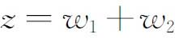
，其中w1属于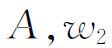
和A正交，后者是指w2和A的每个元素正交（这个结果，今天称为投影定理；w1就是z在A中的投影）。进一步，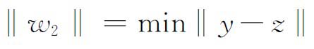
，其中y是A的变动元素，而且极小值只在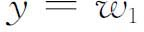
时达到。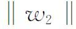
称为z和A之间的距离。在1907年，施密特和弗雷歇同时注意到，平方可和（勒贝格可积）函数的空间有一种几何，完全类似于序列的希尔伯特空间。这个类似性的阐明是在几个月之后，当时里斯运用在勒贝格平方可积函数与平方可和实数列之间建立一一对应的里斯-费希尔定理（第45章第4节）指出，在平方可和函数的集合L2中能够定义一种距离，用它就能建立这个函数空间的一种几何。L2中，定义在区间［a，b］上的任何两个平方可积函数之间的距离这个概念，事实上也是弗雷歇定义的(18)，他把它定义为
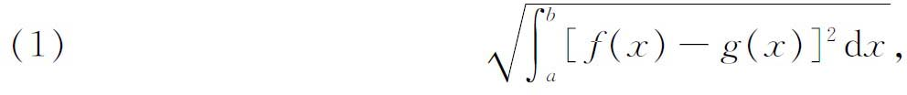
其中积分应理解为勒贝格意义下的；并且两个函数只在一个0测集上不同时就认为是相等的。距离的平方也称为这两个函数的平均平方偏差。f和g的内积定义为
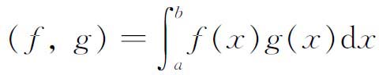
。使（f，g）＝0的两个函数f与g称为是正交的。施瓦茨不等式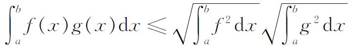
以及对平方可和序列空间成立的其他性质，都适用于函数空间。特别是，这类平方可和函数形成一个完备的空间。这样，平方可和函数的空间，同这些函数相应于某一固定的完备标准正交函数系的傅里叶系数所构成的平方可和序列的空间，可以认为是相同的。
在提到抽象函数空间时，我们应重提一下（第45章第4节）里斯引入的空间
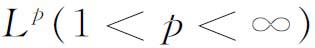
。这些空间对度量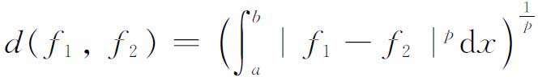
也是完备的。
虽然我们很快就要考察抽象空间领域中的其他成就，但下一发展涉及泛函和算子。在刚才引述的对空间L2的函数引进了距离的文章（1907）中，以及在同年的其他文章中(19)，弗雷歇证明了对于定义在L2的每一个连续线性泛函U（f），存在L2中唯一的一个u（x），使得对L2的每个f都有
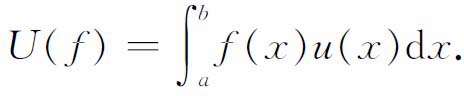
这推广了阿达马1903年(20)得到的一个结果。1909年里斯(21)推广了这个结果，用斯蒂尔切斯积分表示U（f），也就是
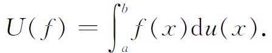
里斯自己还把这个结果推广到满足下面条件的线性泛函A：对Lp中所有的f，
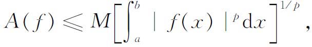
其中M只依赖于A。这样，存在Lq中的一个函数a（x），在允许相差一个积分为0的函数的意义下是唯一的，使得对Lp中所有的f，
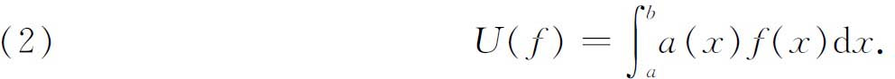
这个结果称为里斯表示定理。
泛函分析的中心部分是研究在微分方程和积分方程中出现的算子的抽象理论。这个理论统一了微分方程和积分方程的特征值理论以及作用在n维空间中的线性变换。这样的一个算子，例如
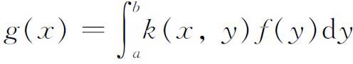
（其中k是给定的），把f变到g并且满足某些附加条件。在抽象算子的符号A和符号g＝Af的表示法之下，线性是指
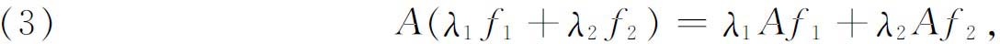
其中
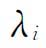
是任何实常数或复常数。不定积分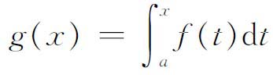
和微商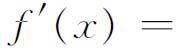
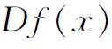
，对通常的函数类来说，就是线性算子。算子A的连续性是指，如果函数序列fn按函数空间的极限意义收敛到f，那么Afn必然趋向于Af。带对称核
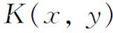
的积分方程的抽象推广是算子A的自伴性。如果对于任何两个函数f1，f2都有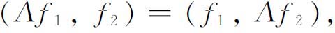
其中
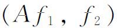
表示空间中两个函数的内积或数量积，那么称A为自伴的。在积分方程的情形，如果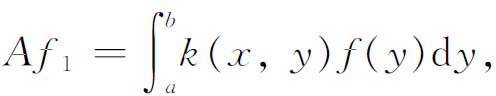
则
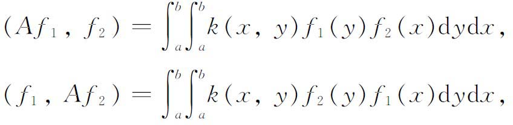
因而只要核是对称的，就有
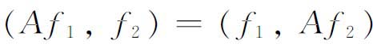
。对任意的自伴算子，特征值都是实的，而且对应于不同特征值的特征函数是互相正交的。作为泛函分析核心的抽象算子理论的一个良好开端，是由里斯1910年发表在《数学年刊》（Mathematische Annalen）的文章中做出的，文中他引进了Lp空间（第45章第4节）。在那里他把积分方程
的解推广到Lp空间中的函数。里斯把表达式
设想为作用在函数φ（t）上的变换。他称之为泛函变换，记为。然而，由于里斯所处理的φ（t）是属于Lp空间的，所以变换就把函数变到同一或另一空间去。特别地，一个把Lp中的函数变为Lp中的函数的变换或算子，称为在Lp中是线性的，如果它满足（3）并且如果T是有界的；这就是说，存在一个常数M，使得对Lp中所有满足
的函数f都有
后来这种M的最小上界称为T的范数（norm），用‖T‖表示。
里斯还引进了T的伴随或转置算子的概念。对Lq中任何一个g和作用在Lp中的T，
对固定的g与在Lp中变动的f定义了Lp的一个泛函。因此由里斯表示定理，存在Lq中的一个函数Φ（x），在差一个积分为0的函数外是唯一的，使得
T的伴随或转置算子用T*表示，现在就定义为Lq中这样的算子：它对固定的T只与g有关，并根据等式（5）把g对应于，也就是说，。［用近代的记号，T*满足是中的线性变换，而且。
里斯现在考虑方程
的解，其中T是Lp中的线性变换，f已知而φ是未知的。他证明
（6）有一个解当且仅当
对Lq中所有的g都成立。他由此引入逆变换或逆算子的概念，并把完全一样的思想引到。借助于伴随算子，他证明了逆算子的存在性。
里斯在他1910年的文章中引进了记号
其中K现在表示，而*表示受K作用的一个函数。他的补充结果是限于L2的，在其中有K＝K*。为了处理积分方程的特征值问题，他引入了希尔伯特的全连续概念，但现在是对抽象算子说的。L2中的一个算子K称为是全连续的，如果K把每一个弱收敛的函数序列（第45章第4节）映为强收敛的序列，也就是说，｛fn｝弱收敛蕴含｛K（fn）｝强收敛。他曾证明（7）的谱是离散的（这就是说，不存在对称K的连续谱），并证明相应于不同特征值的特征函数是正交的。
应用范数概念作为研究抽象空间的另一种方法也是由里斯开始的(22)。然而，赋范空间的一般定义却是在1920到1922年间由巴拿赫（Stefan Banach，1892—1945）、哈恩（Hans Hahn，1879—1934）、埃利（Eduard Helly，1884—1943）和维纳（Norbert Wiener，1894—1964）给出的。虽然这些人的工作有许多是重叠的，并且优先权的问题也很难弄清，但要算巴拿赫的工作影响最大。他的动力来自积分方程的普遍化。
所有这些工作，特别是巴拿赫的工作(23)，主要特点是要建立具有范数的空间，但这范数却不再用内积来定义。虽然在，但是不可能这样来定义巴拿赫空间的范数，因为内积不再是可用的了。
巴拿赫从空间E出发，用x，y，z，…表示E中的元素，而用a，b，c，…表示实数。他的空间的公理分成三组。第一组包含13条公理，说明E在加法下是一个交换群，与实数进行数乘是封闭的，实数与元素的各种运算满足熟知的一组结合律和分配律。
第二组公理刻画E中元素（向量）的范数。范数是定义在E上的实值函数的，用‖x‖表示。对于任一实数a和E中的任一元素x，范数具有下列性质：
（a）‖x‖≥0；
（b）‖x‖＝0当且仅当x＝0；
（c）‖ax‖＝｜a｜·‖x‖；
（d）‖x＋y‖≤‖x‖＋‖y‖．
第三组只包含一个完备性公理，它说，如果｛xn｝对范数来说是一柯西序列，即如果，则存在E中一个元素x，使得
满足上述三组公理的空间称为巴拿赫空间，或完备的赋范向量空间。虽然巴拿赫空间是较希尔伯特空间更为一般的，因为在定义范数时没有事先假设两个元素的内积存在，然而作为一个必然的后果却是，在非希尔伯特空间的巴拿赫空间中失却了两个元素正交这一关键性概念。第一和第三组条件对希尔伯特空间也成立，但第二组条件却较希尔伯特空间范数的要求为弱。巴拿赫空间包括Lp空间，连续函数空间，有界可测函数空间，以及其他具有合适范数可用的空间。
有了范数的概念，巴拿赫能够对他的空间证明许多人们熟悉的事实。关键定理之一是：设｛xn｝是E中的一序列元素，满足条件
则按范数收敛到E的某个元素x。
在证明了一些定理之后，巴拿赫考虑定义在一个空间上而取值在另一个巴拿赫空间E1中的算子。一个算子F称为在x0处相对于集合A是连续的，如果F（x）对A的所有x有定义，并且x0属于A和A的导集，而且当是A中以x0为极限的序列时，则趋向。他还定义了F相对于集合A的一致连续性，然后把他的注意回到算子序列。算子序列｛Fn｝称为在集合A上按范数收敛到F，如果对于A中每一个x都有
巴拿赫引进的一类重要的算子是连续的加法算子。一个算子F是加法的，如果对所有的x和y都有。可以证明，一个加法的连续算子具有性质：对一切实数a都成立。如果F是加法的，并且在E的一个元素（点）处连续，那么它处处连续并且是有界的，即存在只依赖于F的常数M，使对E中一切x成立。另外一个定理断言：如果｛Fn｝是加法连续算子序列，又F是一个加法算子，使得对每个x都有，则F是连续的，并且存在M，使得对所有的n成立。
在这篇文章中，巴拿赫证明了关于积分方程抽象形式的解的定理。如果F是定义域和值域都在空间E内的连续算子，又如果存在一个数M，0＜M＜1，使得对所有E中的x′与x″都有，那么存在E中唯一的一个元素x，满足F（x）＝x。更重要的是下述定理：考虑方程
其中y是E中的一个已知函数，F是定义域和值域都在E内的加法连续算子，h是一个实数。令M是所有满足（对所有x）的常数M′的最小上界。那么对每一个y和每一个满足｜hM｜＜1的h值，存在一个函数x满足（8），并且
其中。这个结果是谱半径定理的一种形式，并且是沃尔泰拉解积分方程方法的推广。
巴拿赫在1929年(24)引进了泛函分析这一学科的另一个重要概念，这就是一个巴拿赫空间的对偶空间或伴随空间。这个思想也由哈恩(25)独立地引进过，但巴拿赫的工作更完全。这种对偶空间就是已知空间上的全体连续有界线性泛函组成的空间。这泛函空间的范数取为泛函的界，可以证明这空间是完备的赋范线性空间，即巴拿赫空间。实际上，这里巴拿赫的工作推广了里斯关于Lp与Lq空间的工作，其中，因为Lq空间等价于Lp空间在巴拿赫意义下的对偶空间。用里斯表示定理（2），把巴拿赫的工作和这联系起来是很明显的。换句话说，巴拿赫空间E和它的对偶空间的关系，就像Lp和Lq的关系一样。
巴拿赫从连续线性泛函（即定义域是空间E的连续实值函数）的定义着手，并证明每一个这样的泛函是有界的。一个关键性的定理是今天所谓的哈恩-巴拿赫定理，这推广了哈恩的工作中的一个定理。设p是定义在一个完备的赋范线性空间R上的一个实值泛函，并且p对R中的所有x与y满足条件：
（a）
（b）
这时就存在R上的一个加法泛函f，使得
对R中一切x成立。还有好几个论述R上的连续泛函类的定理。
泛函方面的工作引导到伴随算子的概念。设R和S是两个巴拿赫空间，U是定义域在R内取值在S内的连续线性算子。用R*和S*分别表示定义在R和S上的全体有界线性泛函。于是U诱导出一个从S*到R*中的变换如下：如果g是S*的一个元素，则g［U（x）］对于R中的一切x是定义好了的。但由U和g的线性性质可知这也是定义在R上的线性泛函，即g［U（x）］是R*的一个元素。换个说法是，如果U（x）＝y，则g（y）＝f（x），其中f是R上的一个泛函，即R*的一个元素。这个诱导出来的从S*到R*的变换U*，称为U的伴随算子。
运用这个概念，巴拿赫证明，如果U*有一个连续逆，则y＝U（x）对S中的任一y是可解的。而且，如果f＝U*（g）对R*的每一个f可解，则存在，并且在U的值域上是连续的，其中U在S内的值域是指所有这样的y的集合，对于它存在S*的一个g，使得g（y）＝0只要U*（g）＝0。（最后这个命题是弗雷德霍姆择一定理的一个推广。）
巴拿赫把他的伴随算子理论应用到里斯算子，这种算子是里斯在他1918年的文章中引入的。这是形如U＝I－λV的算子U，其中I是恒等算子，而V是一个全连续算子。这时抽象理论可以应用到定义在［0，1］上的函数空间L2和算子
其中。把一般理论应用到
以及与它相应的转置方程
便知道如果λ0是（9）的特征值，则λ0是（10）的特征值，反之亦然。进一步，（9）对于λ0有有限多个线性无关的特征函数，并且这对（10）也是真的。还有，当λ＝λ0时（9）对所有的y没有解。事实上，（9）有解的一个必要充分条件是，这n个条件
都被满足，其中是
的线性无关解的集合。